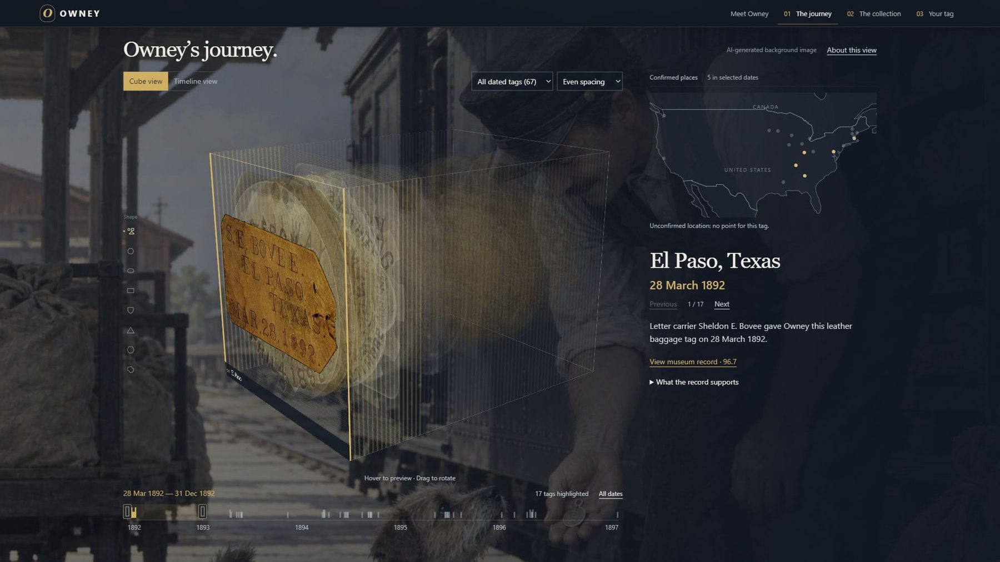
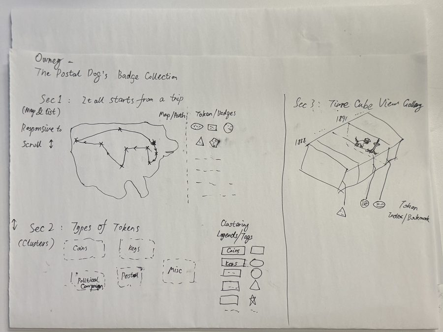
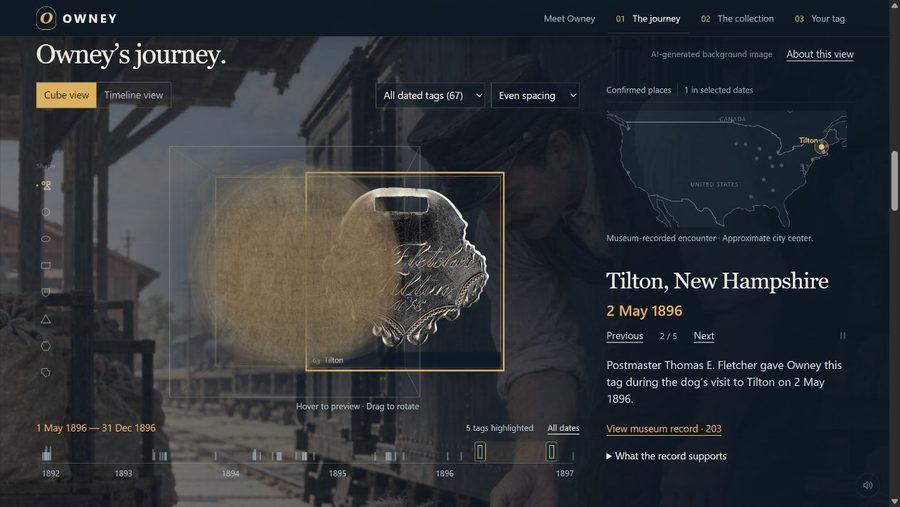
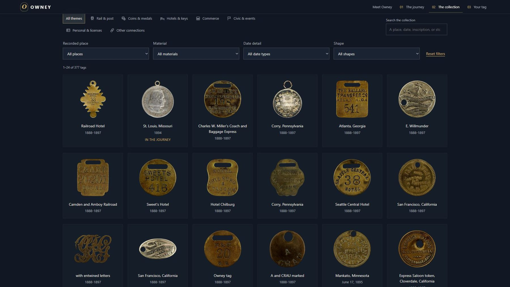
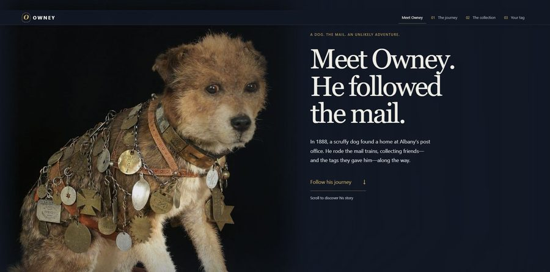
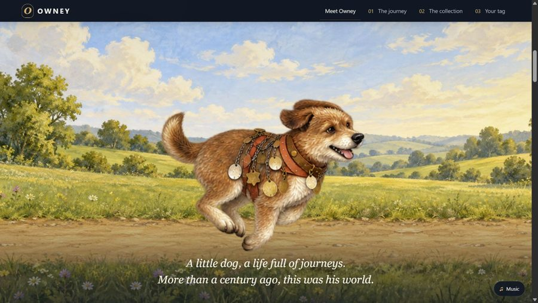

03 · Sep – Oct 2026 · Major Studio 1
Owney — A Life in Tags
Owney was a scruffy dog who found a home at the Albany post office in 1888 and rode the Railway Mail Service trains across the country. Postal workers and admirers gave him tags along the way. I turned the museum's records of those tags into a time cube: each dated tag is a layer of time you can rotate, brush and explore.
- Role
- Solo project: data research, concept, visual direction and design; implementation with an AI coding assistant
- Context
- Major Studio 1, Project 1. MS Data Visualization, Parsons
- Data
- Smithsonian Open Access API, National Postal Museum: 377 tag records, 67 tags with precise dates (1892–1897), 23 with museum-supported places
- Links
- Live site · Code on GitHub
Tools: HTML, CSS and JavaScript, TopoJSON map, Cloudflare Worker and D1 for visitor tags. AI help: OpenAI Codex assisted with implementation, data preparation and testing; OpenAI image generation made the painted scenes and the running-dog animation, which the site labels as atmosphere, not history.

Tags as layers of time
The time-volume idea comes from Bradley Tangonan's "xy + t" studies, which stack video frames into a block of time. Owney left no film, so his tag photos became the layers: each of the 67 dated tags is a transparent cut-out on its own chronological layer. Viewers switch between Cube view and Timeline view, rotate the cube by drag or touch, and brush a date range; a linked map shows the confirmed cities, and filters for shape, theme and material connect the views.


Gaps stay gaps
Of 377 tag records, only 67 have precise usable dates and only 23 have places the museum's records support. The site keeps uncertain dates and places as gaps: no invented stops and no speculative routes. Each tag's card says what the record supports and links back to the museum object.

A dog who was once alive
The page opens with the museum's photo of Owney wearing his tags. Between the intro and the data, a painted countryside with a running Owney reminds visitors that this was a living dog. At the end, visitors can leave a tag of their own (a city and a message) in a shared collection, and download it as an image.

